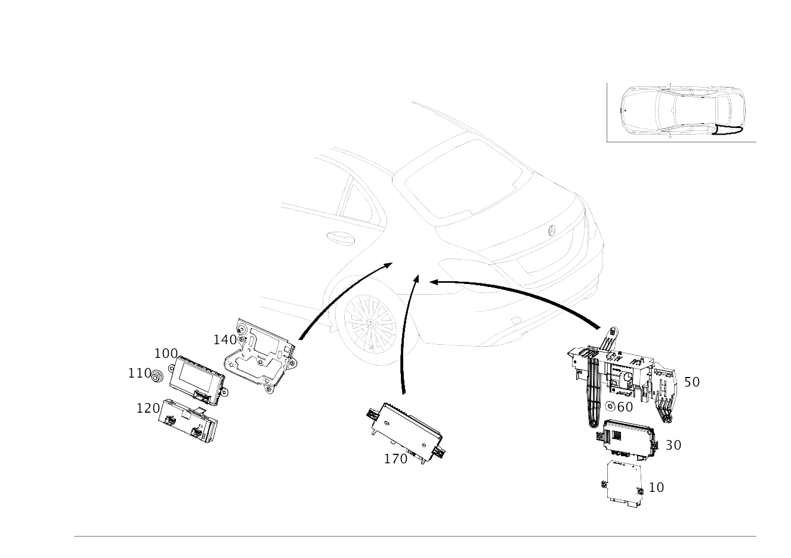

| № | Артикул | Название | Кол. | Примечание | Ограничение |
|---|---|---|---|---|---|
| 10 | A 222 900 00 14 | Блок управления (CONTROL UNIT) | 1 | Дополнительные функции специальных автомобилей [672] ДЕТАЛЬ ПОСЛЕ УСТАН.ПРОВЕРИТЬ НА АКТУАЛЬНОСТЬ "ПРОШИВНОГО" ПО [697] ДЕТАЛЬ ПОСТАВЛЯЕТСЯ ТОЛЬКО/ИЛИ ТАКЖЕ КАК ЗАП.ЧАСТЬ | (805/806/807/808)+(965/Z90/Z97) |
| 10 | A 213 900 21 13 | Блок управления (CONTROL UNIT) | 1 | Дополнительные функции специальных автомобилей [672] ДЕТАЛЬ ПОСЛЕ УСТАН.ПРОВЕРИТЬ НА АКТУАЛЬНОСТЬ "ПРОШИВНОГО" ПО [697] ДЕТАЛЬ ПОСТАВЛЯЕТСЯ ТОЛЬКО/ИЛИ ТАКЖЕ КАК ЗАП.ЧАСТЬ | (965/Z90/Z97)+-(805/806/807/808) |
| 30 | A 205 900 26 29 | Блок управления (CONTROL UNIT) | 1 | Камера с обзором 360 градусов [672] ДЕТАЛЬ ПОСЛЕ УСТАН.ПРОВЕРИТЬ НА АКТУАЛЬНОСТЬ "ПРОШИВНОГО" ПО | (807+057/808)+501 |
| 50 | A 205 545 61 00 | Держатель (HOLDER) | 1 | Система кругового обзора | (807/808)+(B24/501/965/Z90/Z97) |
| 50 | A 205 545 77 00 | Держатель (HOLDER) | 1 | Парковочная система | (809/800/801/802/803/804)+(235/233/965/Z90/881/934)+-(805/806/807/808) |
| 60 | N 000000 006037 | ГАЙКА КОМБИНИРОВАННАЯ (NUT-AND-WASHER ASSEMBLY) | 2 | Держатель к остову кузова слева; M6 | (804/805/806/808)+(B24/501/965/Z90/Z97) |
| 60 | N 000000 006037 | ГАЙКА КОМБИНИРОВАННАЯ (NUT-AND-WASHER ASSEMBLY) | 2 | Держатель к остову кузова слева; M6 | (235/233/965/Z90/881/934)+-(804/805/806/808) |
| 100 | A 222 900 42 13 | Блок управления (CONTROL UNIT) | 1 | Система "Keyless\-Go" [672] ДЕТАЛЬ ПОСЛЕ УСТАН.ПРОВЕРИТЬ НА АКТУАЛЬНОСТЬ "ПРОШИВНОГО" ПО [697] ДЕТАЛЬ ПОСТАВЛЯЕТСЯ ТОЛЬКО/ИЛИ ТАКЖЕ КАК ЗАП.ЧАСТЬ | (805/806/807/808)+(889/893) |
| 100 | A 222 900 99 15 | Блок управления (CONTROL UNIT) | 1 | Система "Keyless\-Go" [672] ДЕТАЛЬ ПОСЛЕ УСТАН.ПРОВЕРИТЬ НА АКТУАЛЬНОСТЬ "ПРОШИВНОГО" ПО | 809 |
| 100 | A 222 900 00 16 | Блок управления (CONTROL UNIT) | 1 | Система "Keyless\-Go" [672] ДЕТАЛЬ ПОСЛЕ УСТАН.ПРОВЕРИТЬ НА АКТУАЛЬНОСТЬ "ПРОШИВНОГО" ПО [697] ДЕТАЛЬ ПОСТАВЛЯЕТСЯ ТОЛЬКО/ИЛИ ТАКЖЕ КАК ЗАП.ЧАСТЬ | 809+889 |
| 100 | A 222 900 47 18 | Блок управления (CONTROL UNIT) | 1 | Система "Keyless\-Go" [672] ДЕТАЛЬ ПОСЛЕ УСТАН.ПРОВЕРИТЬ НА АКТУАЛЬНОСТЬ "ПРОШИВНОГО" ПО [697] ДЕТАЛЬ ПОСТАВЛЯЕТСЯ ТОЛЬКО/ИЛИ ТАКЖЕ КАК ЗАП.ЧАСТЬ | 809+889 |
| 100 | A 222 900 03 16 | Блок управления (CONTROL UNIT) | 2 | Система "Keyless\-Go" [672] ДЕТАЛЬ ПОСЛЕ УСТАН.ПРОВЕРИТЬ НА АКТУАЛЬНОСТЬ "ПРОШИВНОГО" ПО | 809+896 |
| 100 | A 222 900 99 15 | Блок управления (CONTROL UNIT) | 1 | Система "Keyless\-Go" [672] ДЕТАЛЬ ПОСЛЕ УСТАН.ПРОВЕРИТЬ НА АКТУАЛЬНОСТЬ "ПРОШИВНОГО" ПО | (809/800/801/802/803/804)+-889 |
| 100 | A 222 900 33 20 | Блок управления (CONTROL UNIT) | 1 | Система "Keyless\-Go" [672] ДЕТАЛЬ ПОСЛЕ УСТАН.ПРОВЕРИТЬ НА АКТУАЛЬНОСТЬ "ПРОШИВНОГО" ПО [697] ДЕТАЛЬ ПОСТАВЛЯЕТСЯ ТОЛЬКО/ИЛИ ТАКЖЕ КАК ЗАП.ЧАСТЬ | (809/800/801/802/803/804)+-889 |
| 100 | A 222 900 00 16 | Блок управления (CONTROL UNIT) | 1 | Система "Keyless\-Go" [672] ДЕТАЛЬ ПОСЛЕ УСТАН.ПРОВЕРИТЬ НА АКТУАЛЬНОСТЬ "ПРОШИВНОГО" ПО [697] ДЕТАЛЬ ПОСТАВЛЯЕТСЯ ТОЛЬКО/ИЛИ ТАКЖЕ КАК ЗАП.ЧАСТЬ | (800/801/802/803/804)+889 |
| 100 | A 222 900 47 18 | Блок управления (CONTROL UNIT) | 1 | Система "Keyless\-Go" [672] ДЕТАЛЬ ПОСЛЕ УСТАН.ПРОВЕРИТЬ НА АКТУАЛЬНОСТЬ "ПРОШИВНОГО" ПО [697] ДЕТАЛЬ ПОСТАВЛЯЕТСЯ ТОЛЬКО/ИЛИ ТАКЖЕ КАК ЗАП.ЧАСТЬ | (800/801/802/803/804)+889 |
| 100 | A 222 900 03 16 | Блок управления (CONTROL UNIT) | 1 | Система "Keyless\-Go" [672] ДЕТАЛЬ ПОСЛЕ УСТАН.ПРОВЕРИТЬ НА АКТУАЛЬНОСТЬ "ПРОШИВНОГО" ПО | (800/801/802/803/804)+896 |
| 100 | A 222 900 03 16 | Блок управления (CONTROL UNIT) | 1 | Система "Keyless\-Go" [672] ДЕТАЛЬ ПОСЛЕ УСТАН.ПРОВЕРИТЬ НА АКТУАЛЬНОСТЬ "ПРОШИВНОГО" ПО | (800/801/802/803/804)+889+896 |
| 100 | A 222 900 34 20 | Блок управления (CONTROL UNIT) | 1 | Система "Keyless\-Go" [672] ДЕТАЛЬ ПОСЛЕ УСТАН.ПРОВЕРИТЬ НА АКТУАЛЬНОСТЬ "ПРОШИВНОГО" ПО | (800/801/802/803/804)+889 |
| 110 | A 000 990 43 37 | Шестигранная гайка (HEXAGON NUT) | 1 | Блок управления к держателю; M6 | 889/893 |
| 120 | A 222 900 60 08 | Блок управления (CONTROL UNIT) | 1 | Дистанционное закрывание крышки багажника [672] ДЕТАЛЬ ПОСЛЕ УСТАН.ПРОВЕРИТЬ НА АКТУАЛЬНОСТЬ "ПРОШИВНОГО" ПО [697] ДЕТАЛЬ ПОСТАВЛЯЕТСЯ ТОЛЬКО/ИЛИ ТАКЖЕ КАК ЗАП.ЧАСТЬ | (805/806/807/808)+881 |
| 120 | A 213 900 08 14 | Блок управления (CONTROL UNIT) | 1 | Дистанционное закрывание крышки багажника [672] ДЕТАЛЬ ПОСЛЕ УСТАН.ПРОВЕРИТЬ НА АКТУАЛЬНОСТЬ "ПРОШИВНОГО" ПО [697] ДЕТАЛЬ ПОСТАВЛЯЕТСЯ ТОЛЬКО/ИЛИ ТАКЖЕ КАК ЗАП.ЧАСТЬ | (809/800/801/802/803/804)+881 |
| 140 | A 205 545 22 40 | Держатель (HOLDER) | 1 | Система "Keyless\-Go" | (805/806/807/808)+(881/889/893) |
| 170 | A 000 900 12 22 | Блок управления (CONTROL UNIT) | 1 | Система помощи при парковке [672] ДЕТАЛЬ ПОСЛЕ УСТАН.ПРОВЕРИТЬ НА АКТУАЛЬНОСТЬ "ПРОШИВНОГО" ПО [697] ДЕТАЛЬ ПОСТАВЛЯЕТСЯ ТОЛЬКО/ИЛИ ТАКЖЕ КАК ЗАП.ЧАСТЬ | (801/802)+(235+218) |
| 170 | A 000 900 43 32 | Блок управления (CONTROL UNIT) | 1 | Система помощи при парковке [672] ДЕТАЛЬ ПОСЛЕ УСТАН.ПРОВЕРИТЬ НА АКТУАЛЬНОСТЬ "ПРОШИВНОГО" ПО [697] ДЕТАЛЬ ПОСТАВЛЯЕТСЯ ТОЛЬКО/ИЛИ ТАКЖЕ КАК ЗАП.ЧАСТЬ | 235+501+835 |
| 170 | A 000 900 12 22 | Блок управления (CONTROL UNIT) | 1 | Система помощи при парковке [672] ДЕТАЛЬ ПОСЛЕ УСТАН.ПРОВЕРИТЬ НА АКТУАЛЬНОСТЬ "ПРОШИВНОГО" ПО [697] ДЕТАЛЬ ПОСТАВЛЯЕТСЯ ТОЛЬКО/ИЛИ ТАКЖЕ КАК ЗАП.ЧАСТЬ | (801/802)+235 |
| 170 | A 000 900 13 22 | Блок управления (CONTROL UNIT) | 1 | Система помощи при парковке [672] ДЕТАЛЬ ПОСЛЕ УСТАН.ПРОВЕРИТЬ НА АКТУАЛЬНОСТЬ "ПРОШИВНОГО" ПО | (801/802)+(235+501) |
| 170 | A 000 900 18 08 | Блок управления (CONTROL UNIT) | 1 | Система помощи при парковке [672] ДЕТАЛЬ ПОСЛЕ УСТАН.ПРОВЕРИТЬ НА АКТУАЛЬНОСТЬ "ПРОШИВНОГО" ПО [697] ДЕТАЛЬ ПОСТАВЛЯЕТСЯ ТОЛЬКО/ИЛИ ТАКЖЕ КАК ЗАП.ЧАСТЬ | (807/808)+235+-ME06 |
| 170 | A 000 900 65 16 | Блок управления (CONTROL UNIT) | 1 | Система помощи при парковке [672] ДЕТАЛЬ ПОСЛЕ УСТАН.ПРОВЕРИТЬ НА АКТУАЛЬНОСТЬ "ПРОШИВНОГО" ПО [697] ДЕТАЛЬ ПОСТАВЛЯЕТСЯ ТОЛЬКО/ИЛИ ТАКЖЕ КАК ЗАП.ЧАСТЬ | 809+235+218 |
| 170 | A 000 900 63 18 | Блок управления (CONTROL UNIT) | 1 | Система помощи при парковке [672] ДЕТАЛЬ ПОСЛЕ УСТАН.ПРОВЕРИТЬ НА АКТУАЛЬНОСТЬ "ПРОШИВНОГО" ПО [697] ДЕТАЛЬ ПОСТАВЛЯЕТСЯ ТОЛЬКО/ИЛИ ТАКЖЕ КАК ЗАП.ЧАСТЬ | (800+-050)+235+218 |
| 170 | A 000 900 63 18 | Блок управления (CONTROL UNIT) | 1 | Система помощи при парковке [672] ДЕТАЛЬ ПОСЛЕ УСТАН.ПРОВЕРИТЬ НА АКТУАЛЬНОСТЬ "ПРОШИВНОГО" ПО [697] ДЕТАЛЬ ПОСТАВЛЯЕТСЯ ТОЛЬКО/ИЛИ ТАКЖЕ КАК ЗАП.ЧАСТЬ | 800+-050+235 |
| 170 | A 000 900 27 20 | Блок управления (CONTROL UNIT) | 1 | Система помощи при парковке [672] ДЕТАЛЬ ПОСЛЕ УСТАН.ПРОВЕРИТЬ НА АКТУАЛЬНОСТЬ "ПРОШИВНОГО" ПО [697] ДЕТАЛЬ ПОСТАВЛЯЕТСЯ ТОЛЬКО/ИЛИ ТАКЖЕ КАК ЗАП.ЧАСТЬ | 800+050+235+218 |
| 170 | A 000 900 66 16 | Блок управления (CONTROL UNIT) | 1 | Система помощи при парковке [672] ДЕТАЛЬ ПОСЛЕ УСТАН.ПРОВЕРИТЬ НА АКТУАЛЬНОСТЬ "ПРОШИВНОГО" ПО | 809+235+501 |
| 170 | A 000 900 27 20 | Блок управления (CONTROL UNIT) | 1 | Система помощи при парковке [672] ДЕТАЛЬ ПОСЛЕ УСТАН.ПРОВЕРИТЬ НА АКТУАЛЬНОСТЬ "ПРОШИВНОГО" ПО [697] ДЕТАЛЬ ПОСТАВЛЯЕТСЯ ТОЛЬКО/ИЛИ ТАКЖЕ КАК ЗАП.ЧАСТЬ | 800+050+235 |
| 170 | A 000 900 64 18 | Блок управления (CONTROL UNIT) | 1 | Система помощи при парковке [672] ДЕТАЛЬ ПОСЛЕ УСТАН.ПРОВЕРИТЬ НА АКТУАЛЬНОСТЬ "ПРОШИВНОГО" ПО [697] ДЕТАЛЬ ПОСТАВЛЯЕТСЯ ТОЛЬКО/ИЛИ ТАКЖЕ КАК ЗАП.ЧАСТЬ | (800+-050)+235+501 |
| 170 | A 000 900 28 20 | Блок управления (CONTROL UNIT) | 1 | Система помощи при парковке [672] ДЕТАЛЬ ПОСЛЕ УСТАН.ПРОВЕРИТЬ НА АКТУАЛЬНОСТЬ "ПРОШИВНОГО" ПО [697] ДЕТАЛЬ ПОСТАВЛЯЕТСЯ ТОЛЬКО/ИЛИ ТАКЖЕ КАК ЗАП.ЧАСТЬ | 800+050+235+501 |
| 170 | A 000 900 12 22 | Блок управления (CONTROL UNIT) | 1 | Система помощи при парковке [672] ДЕТАЛЬ ПОСЛЕ УСТАН.ПРОВЕРИТЬ НА АКТУАЛЬНОСТЬ "ПРОШИВНОГО" ПО [697] ДЕТАЛЬ ПОСТАВЛЯЕТСЯ ТОЛЬКО/ИЛИ ТАКЖЕ КАК ЗАП.ЧАСТЬ | 801+235+218 |
| 170 | A 000 900 12 22 | Блок управления (CONTROL UNIT) | 1 | Система помощи при парковке [672] ДЕТАЛЬ ПОСЛЕ УСТАН.ПРОВЕРИТЬ НА АКТУАЛЬНОСТЬ "ПРОШИВНОГО" ПО [697] ДЕТАЛЬ ПОСТАВЛЯЕТСЯ ТОЛЬКО/ИЛИ ТАКЖЕ КАК ЗАП.ЧАСТЬ | 801+235 |
| 170 | A 000 900 13 22 | Блок управления (CONTROL UNIT) | 1 | Система помощи при парковке [672] ДЕТАЛЬ ПОСЛЕ УСТАН.ПРОВЕРИТЬ НА АКТУАЛЬНОСТЬ "ПРОШИВНОГО" ПО | 801+235+501 |
| 220 | A 253 900 46 00 | Блок управления (CONTROL UNIT) | 1 | Система экстренного вызова [672] ДЕТАЛЬ ПОСЛЕ УСТАН.ПРОВЕРИТЬ НА АКТУАЛЬНОСТЬ "ПРОШИВНОГО" ПО [697] ДЕТАЛЬ ПОСТАВЛЯЕТСЯ ТОЛЬКО/ИЛИ ТАКЖЕ КАК ЗАП.ЧАСТЬ | 348+830+(805+055+140/806) |
| 220 | A 253 900 47 00 | Блок управления (CONTROL UNIT) | 1 | Система экстренного вызова [672] ДЕТАЛЬ ПОСЛЕ УСТАН.ПРОВЕРИТЬ НА АКТУАЛЬНОСТЬ "ПРОШИВНОГО" ПО [697] ДЕТАЛЬ ПОСТАВЛЯЕТСЯ ТОЛЬКО/ИЛИ ТАКЖЕ КАК ЗАП.ЧАСТЬ | 348+830+531+(805+055+140/806) |
| 235 | A 166 990 00 12 | болт (SCREW) | 2 | Блок управления к держателю | (805/806)+348 |
| 240 | A 205 545 60 00 | Держатель (HOLDER) | 1 | Блок управления | (807/808)+(ME04/360/362)+-(ME06/M177) |
| 250 | N 304017 006012 | Винт с 6-гранной головкой (HEXAGON HEAD BOLT) | 1 | Держатель к остову кузова; M6X30\-8.8 [001701] ВНИМАНИЕ: ТАКЖЕ ЗАКАЗАТЬ ПОДКЛАДНУЮ ШАЙБУ | (805/806)+(ME04/B54/350/05U/06U/348+(830/460/494/531))+-ME06 |
| 250 | N 304017 006012 | Винт с 6-гранной головкой (HEXAGON HEAD BOLT) | 1 | Держатель к остову кузова; M6X30\-8.8 | (807/808/808)+(ME04/360/362)+-ME06 |
| 252 | N 009021 006208 | Шайба (WASHER) | 1 | Держатель к остову кузова; 6 MM | (805/806)+(ME04/B54/350/05U/06U/348+(830/460/494/531))+-ME06 |
| 260 | A 000 900 37 13 | Блок управления (CONTROL UNIT) | 1 | Давление воздуха в шинах [672] ДЕТАЛЬ ПОСЛЕ УСТАН.ПРОВЕРИТЬ НА АКТУАЛЬНОСТЬ "ПРОШИВНОГО" ПО [697] ДЕТАЛЬ ПОСТАВЛЯЕТСЯ ТОЛЬКО/ИЛИ ТАКЖЕ КАК ЗАП.ЧАСТЬ | (808/809/800/801/802/803/804)+475 |
| 265 | A 000 990 35 62 | Пластмассовая гайка (PLASTIC NUT) | 2 | Крепление блока управления | 475 |
| 300 | A 205 900 96 45 | Блок управления | 1 | Модуль обработки сигналов и управления сзади SAM [672] ДЕТАЛЬ ПОСЛЕ УСТАН.ПРОВЕРИТЬ НА АКТУАЛЬНОСТЬ "ПРОШИВНОГО" ПО | 809 |
| 300 | A 205 900 97 45 | Блок управления (CONTROL UNIT) | 1 | Модуль обработки сигналов и управления сзади SAM [672] ДЕТАЛЬ ПОСЛЕ УСТАН.ПРОВЕРИТЬ НА АКТУАЛЬНОСТЬ "ПРОШИВНОГО" ПО [697] ДЕТАЛЬ ПОСТАВЛЯЕТСЯ ТОЛЬКО/ИЛИ ТАКЖЕ КАК ЗАП.ЧАСТЬ | 809+(540/218/501/881) |
| 300 | A 222 900 58 14 | Блок управления (CONTROL UNIT) | 1 | Модуль обработки сигналов и управления сзади SAM [672] ДЕТАЛЬ ПОСЛЕ УСТАН.ПРОВЕРИТЬ НА АКТУАЛЬНОСТЬ "ПРОШИВНОГО" ПО | 807/808 |
| 300 | A 222 900 59 14 | Блок управления (CONTROL UNIT) | 1 | Модуль обработки сигналов и управления сзади SAM [672] ДЕТАЛЬ ПОСЛЕ УСТАН.ПРОВЕРИТЬ НА АКТУАЛЬНОСТЬ "ПРОШИВНОГО" ПО [697] ДЕТАЛЬ ПОСТАВЛЯЕТСЯ ТОЛЬКО/ИЛИ ТАКЖЕ КАК ЗАП.ЧАСТЬ | (807/808)+(877/540/494/460/881/631/632/640/641/642/873/401/221/222/403/872) |
| 300 | A 205 900 68 37 | Блок управления (CONTROL UNIT) | 1 | Модуль обработки сигналов и управления сзади SAM [672] ДЕТАЛЬ ПОСЛЕ УСТАН.ПРОВЕРИТЬ НА АКТУАЛЬНОСТЬ "ПРОШИВНОГО" ПО | 809 |
| 300 | A 205 900 70 37 | Блок управления (CONTROL UNIT) | 1 | Модуль обработки сигналов и управления сзади SAM [672] ДЕТАЛЬ ПОСЛЕ УСТАН.ПРОВЕРИТЬ НА АКТУАЛЬНОСТЬ "ПРОШИВНОГО" ПО | 809+(540/218/501/881) |
| 300 | A 205 900 70 43 | Блок управления (CONTROL UNIT) | 1 | Модуль обработки сигналов и управления сзади SAM [672] ДЕТАЛЬ ПОСЛЕ УСТАН.ПРОВЕРИТЬ НА АКТУАЛЬНОСТЬ "ПРОШИВНОГО" ПО | 800 |
| 300 | A 205 900 71 43 | Блок управления (CONTROL UNIT) | 1 | Модуль обработки сигналов и управления сзади SAM [672] ДЕТАЛЬ ПОСЛЕ УСТАН.ПРОВЕРИТЬ НА АКТУАЛЬНОСТЬ "ПРОШИВНОГО" ПО [697] ДЕТАЛЬ ПОСТАВЛЯЕТСЯ ТОЛЬКО/ИЛИ ТАКЖЕ КАК ЗАП.ЧАСТЬ | 800+(540/218/501/881) |
| 300 | A 205 900 57 47 | Блок управления (CONTROL UNIT) | 1 | Модуль обработки сигналов и управления сзади SAM [672] ДЕТАЛЬ ПОСЛЕ УСТАН.ПРОВЕРИТЬ НА АКТУАЛЬНОСТЬ "ПРОШИВНОГО" ПО | 801/802/803/804 |
| 300 | A 205 900 58 47 | Блок управления (CONTROL UNIT) | 1 | Модуль обработки сигналов и управления сзади SAM [672] ДЕТАЛЬ ПОСЛЕ УСТАН.ПРОВЕРИТЬ НА АКТУАЛЬНОСТЬ "ПРОШИВНОГО" ПО | (801/802/803/804)+(540/218/501/881) |
| 320 | A 205 906 25 01 | Блок реле (RELAY UNIT) | 1 | Блок предохранителей и реле (SRB), неукомплектованный | (805/806/807/808)+-(M177/M016/ME04/ME06) |
| 320 | A 205 906 85 01 | Блок реле (RELAY UNIT) | 1 | Блок предохранителей и реле (SRB), неукомплектованный | 805+(P21/218/386/P65/403/499/501/537/550/810/865/881/890/965/970/974/975/ME04/ME06/U22/B63)+-(M177/M276+M016) |
| 320 | A 205 906 85 01 | Блок реле (RELAY UNIT) | 1 | Блок предохранителей и реле (SRB), неукомплектованный | 806+(P21/218/386/P65/403/499/501/537/550/810/865/881/890/965/970/974/975/ME04/ME06/U22/B63)+-(M177/M276+M016) |
| 320 | A 205 906 85 01 | Блок реле (RELAY UNIT) | 1 | Блок предохранителей и реле (SRB), неукомплектованный | 807+(P21/218/386/P65/403/499/501/537/550/810/865/881/890/965/970/974/975/ME04/ME06/U22/B63)+-(M177/M276+M016) |
| 320 | A 205 906 85 01 | Блок реле (RELAY UNIT) | 1 | Блок предохранителей и реле (SRB), неукомплектованный | 808+(P21/218/386/P65/403/499/501/537/550/810/865/881/890/965/970/974/975/ME04/ME06/U22/B63)+-(M177/M276+M016) |
| 320 | A 213 906 87 01 | Блок реле (RELAY UNIT) | 1 | Блок предохранителей и реле (SRB), неукомплектованный | 809+-(M177/M016/ME04/ME05/ME06) |
| 320 | A 213 906 88 01 | Блок реле (RELAY UNIT) | 1 | Блок предохранителей и реле (SRB), неукомплектованный | 809+(P21/218/379/386/P65/403/501/537/550/810/865/881/890/965/970/974/975/ME05/U22/B63/B24)+-(M177/M016) |
| 320 | A 213 906 87 01 | Блок реле (RELAY UNIT) | 1 | Блок предохранителей и реле (SRB), неукомплектованный | (800/801/802/803/804)+-(M177/M016) |
| 320 | A 213 906 88 01 | Блок реле (RELAY UNIT) | 1 | Блок предохранителей и реле (SRB), неукомплектованный | (800/801/802/803/804)+(550/970/974/975)+-(M177/M016) |
| 325 | A 000 982 19 23 | Реле (RELAY) | 1 | Гнездо S | |
| 325 | A 000 982 96 04 | Реле (RELAY) | 1 | Гнездо T | |
| 325 | A 000 982 64 23 | Реле (RELAY) | 1 | Гнездо T | |
| 325 | A 003 542 16 19 | Реле (RELAY) | 1 | Гнездо T | |
| 325 | A 000 982 19 23 | Реле (RELAY) | 1 | Гнездо U | |
| 325 | A 000 982 82 23 | Реле (RELAY) | 1 | Гнездо V | |
| 325 | A 003 542 08 19 | Реле (RELAY) | 1 | Гнездо V | |
| 325 | A 000 982 19 23 | Реле (RELAY) | 1 | Гнездо X | |
| 325 | A 003 542 30 19 | Контактор (CONTACTOR) | 1 | Гнездо Y | |
| 325 | A 003 542 04 19 | Реле (RELAY) | 1 | Гнездо Y | |
| 325 | A 000 982 77 23 | Реле (RELAY) | 1 | Гнездо Y | |
| 325 | A 000 982 29 23 | Реле (RELAY) | 1 | Гнездо ZR1 | |
| 325 | A 000 982 29 23 | Реле (RELAY) | 1 | Гнездо ZR2 | |
| 335 | N 000000 007900 | Плавкая вставка (FUSE LINK) | 20 | MINI; F\-5\-N | 805/806/807/808 |
| 335 | N 000000 007901 | Плавкая вставка (FUSE LINK) | 3 | MINI; F\-7.5\-N | 805/806/807/808 |
| 335 | N 000000 007902 | Плавкая вставка (FUSE LINK) | 1 | MINI; F\-10\-N | 805/806/807/808 |
| 335 | N 000000 007889 | Плавкая вставка (FUSE LINK) | 4 | ATO; C\-5\-N | 805/806/807/808 |
| 335 | N 000000 007890 | Плавкая вставка (FUSE LINK) | 1 | ATO; C\-7.5\-N | 805/806/807/808 |
| 335 | N 000000 007891 | Плавкая вставка (FUSE LINK) | 1 | ATO; C\-10\-N | 805/806/807/808 |
| 335 | N 000000 007892 | Плавкая вставка (FUSE LINK) | 9 | ATO; C\-15\-N | 805/806/807/808 |
| 335 | N 000000 007893 | Плавкая вставка (FUSE LINK) | 3 | ATO; C\-20\-N | 805/806/807/808 |
| 335 | N 000000 007894 | Плавкая вставка (FUSE LINK) | 8 | ATO; C\-25\-N | 805/806/807/808 |
| 335 | N 000000 007895 | Плавкая вставка (FUSE LINK) | 11 | ATO; C\-30\-N | 805/806/807/808 |
| 335 | N 000000 007905 | Плавкая вставка (FUSE LINK) | 1 | MAXI; E\-30\-N | 805/806/807/808 |
| 335 | N 000000 007906 | Плавкая вставка (FUSE LINK) | 5 | MAXI; E\-40\-N | 805/806/807/808 |
| 335 | N 000000 007664 | Плавкая вставка (FUSE LINK) | 20 | MINI; F\-5A\-S | |
| 335 | N 000000 007665 | Плавкая вставка (FUSE LINK) | 3 | MINI; F\-7.5A\-S | |
| 335 | N 000000 007666 | Плавкая вставка (FUSE LINK) | 1 | MINI; F\-10\-S | |
| 335 | N 000000 007667 | Плавкая вставка (FUSE LINK) | 4 | MINI; F\-15\-S | 809/800/801/802/803/804 |
| 335 | N 000000 007648 | Плавкая вставка (FUSE LINK) | 4 | ATO; C\-5A\-S | |
| 335 | N 000000 007649 | Плавкая вставка (FUSE LINK) | 1 | ATO; C\-7,5A\-S | |
| 335 | N 000000 007650 | Плавкая вставка (FUSE LINK) | 1 | ATO; C\-10A\-S | |
| 335 | N 000000 007651 | Плавкая вставка (FUSE LINK) | 9 | ATO; C\-15A\-S | |
| 335 | N 000000 007652 | Плавкая вставка (FUSE LINK) | 3 | ATO; C\-20A\-S | |
| 335 | N 000000 007653 | Плавкая вставка (FUSE LINK) | 8 | ATO; C\-25A\-S | |
| 335 | N 000000 007654 | Плавкая вставка (FUSE LINK) | 11 | ATO; C\-30A\-S | |
| 335 | N 000000 007659 | Плавкая вставка (FUSE LINK) | 9 | MAXI; E\-40A\-S | |
| 335 | N 000000 007658 | Плавкая вставка (FUSE LINK) | 1 | MAXI; E\-30A\-S | |
| 335 | N 000000 007660 | Плавкая вставка (FUSE LINK) | 1 | MAXI; E\-50A\-S | 809/800/801/802/803/804 |
| 335 | N 000000 007661 | Плавкая вставка (FUSE LINK) | 1 | MAXI; E\-60\-S | 809/800/801/802/803/804 |
| 355 | A 205 540 08 40 | Держатель (HOLDER) | 1 | Модуль реле | 805/806/807/808 |
| 355 | A 213 540 02 00 | Держатель (HOLDER) | 1 | Модуль реле | |
| 357 | A 166 990 00 12 | болт (SCREW) | 1 | ||
| 360 | A 205 545 29 40 | Держатель (HOLDER) | 1 | (805/806/807/808)+-ME06 | |
| 360 | A 238 545 01 00 | Держатель (HOLDER) | 1 | (809/800/801/802/803/804)+-(ME05/ME06) | |
| 370 | N 910143 006002 | Винт с 6-гр. глвк (HEXALOBULAR SCREW) | 2 | Держатель к остову кузова; M6X20 | -ME05 |
| 380 | A 000 990 43 37 | Шестигранная гайка (HEXAGON NUT) | 1 | Держатель к нише запасного колеса; M6 | -ME05 |
| 380 | A 000 990 43 37 | Шестигранная гайка (HEXAGON NUT) | 1 | Держатель к нише запасного колеса; M6 | -ME05 |
| 400 | A 222 900 89 11 | Блок управления (CONTROL UNIT) | 1 | Тюнер, цифровой [672] ДЕТАЛЬ ПОСЛЕ УСТАН.ПРОВЕРИТЬ НА АКТУАЛЬНОСТЬ "ПРОШИВНОГО" ПО [697] ДЕТАЛЬ ПОСТАВЛЯЕТСЯ ТОЛЬКО/ИЛИ ТАКЖЕ КАК ЗАП.ЧАСТЬ | (805/806/807/808)+537 |
| 400 | A 222 900 53 17 | Блок управления (CONTROL UNIT) | 1 | Тюнер, цифровой [672] ДЕТАЛЬ ПОСЛЕ УСТАН.ПРОВЕРИТЬ НА АКТУАЛЬНОСТЬ "ПРОШИВНОГО" ПО [697] ДЕТАЛЬ ПОСТАВЛЯЕТСЯ ТОЛЬКО/ИЛИ ТАКЖЕ КАК ЗАП.ЧАСТЬ | (805/806/807/808)+537 |
| 400 | A 222 900 90 11 | Блок управления (CONTROL UNIT) | 1 | Тюнер, цифровой [672] ДЕТАЛЬ ПОСЛЕ УСТАН.ПРОВЕРИТЬ НА АКТУАЛЬНОСТЬ "ПРОШИВНОГО" ПО [697] ДЕТАЛЬ ПОСТАВЛЯЕТСЯ ТОЛЬКО/ИЛИ ТАКЖЕ КАК ЗАП.ЧАСТЬ | (805/806/807/808)+537+865 |
| 400 | A 222 900 54 17 | Блок управления (CONTROL UNIT) | 1 | Тюнер, цифровой [672] ДЕТАЛЬ ПОСЛЕ УСТАН.ПРОВЕРИТЬ НА АКТУАЛЬНОСТЬ "ПРОШИВНОГО" ПО [697] ДЕТАЛЬ ПОСТАВЛЯЕТСЯ ТОЛЬКО/ИЛИ ТАКЖЕ КАК ЗАП.ЧАСТЬ | (805/806/807/808)+537+865 |
| 400 | A 222 900 39 10 | Блок управления (CONTROL UNIT) | 1 | Тюнер, цифровой; TV [672] ДЕТАЛЬ ПОСЛЕ УСТАН.ПРОВЕРИТЬ НА АКТУАЛЬНОСТЬ "ПРОШИВНОГО" ПО | (805/806/807/808)+498+865 |
| 400 | A 222 900 45 13 | Блок управления (CONTROL UNIT) | 1 | Тюнер, цифровой [672] ДЕТАЛЬ ПОСЛЕ УСТАН.ПРОВЕРИТЬ НА АКТУАЛЬНОСТЬ "ПРОШИВНОГО" ПО [697] ДЕТАЛЬ ПОСТАВЛЯЕТСЯ ТОЛЬКО/ИЛИ ТАКЖЕ КАК ЗАП.ЧАСТЬ | (805/806/807/808)+498+865 |
| 400 | A 222 900 90 07 | Блок управления (CONTROL UNIT) | 1 | Тюнер, цифровой [672] ДЕТАЛЬ ПОСЛЕ УСТАН.ПРОВЕРИТЬ НА АКТУАЛЬНОСТЬ "ПРОШИВНОГО" ПО | (805/806/807/808)+865+(830/858) |
| 400 | A 222 900 85 14 | Блок управления (CONTROL UNIT) | 1 | Тюнер, цифровой [672] ДЕТАЛЬ ПОСЛЕ УСТАН.ПРОВЕРИТЬ НА АКТУАЛЬНОСТЬ "ПРОШИВНОГО" ПО [697] ДЕТАЛЬ ПОСТАВЛЯЕТСЯ ТОЛЬКО/ИЛИ ТАКЖЕ КАК ЗАП.ЧАСТЬ | (805/806/807/808)+835+865 |
| 400 | A 213 900 95 20 | Блок управления (CONTROL UNIT) | 1 | Тюнер, цифровой [672] ДЕТАЛЬ ПОСЛЕ УСТАН.ПРОВЕРИТЬ НА АКТУАЛЬНОСТЬ "ПРОШИВНОГО" ПО | (805/806/807/808)+197+835+865 |
| 400 | A 213 900 53 23 | Блок управления (CONTROL UNIT) | 1 | Тюнер, цифровой [672] ДЕТАЛЬ ПОСЛЕ УСТАН.ПРОВЕРИТЬ НА АКТУАЛЬНОСТЬ "ПРОШИВНОГО" ПО [697] ДЕТАЛЬ ПОСТАВЛЯЕТСЯ ТОЛЬКО/ИЛИ ТАКЖЕ КАК ЗАП.ЧАСТЬ | (805/806/807/808)+197+835+865 |
| 400 | A 213 900 95 16 | Блок управления (CONTROL UNIT) | 1 | Тюнер, цифровой [672] ДЕТАЛЬ ПОСЛЕ УСТАН.ПРОВЕРИТЬ НА АКТУАЛЬНОСТЬ "ПРОШИВНОГО" ПО | (805/806/807/808)+197+865 |
| 400 | A 213 900 96 20 | Блок управления (CONTROL UNIT) | 1 | Тюнер, цифровой [672] ДЕТАЛЬ ПОСЛЕ УСТАН.ПРОВЕРИТЬ НА АКТУАЛЬНОСТЬ "ПРОШИВНОГО" ПО | (805/806/807/808)+197+865 |
| 400 | A 213 900 33 21 | Блок управления (CONTROL UNIT) | 1 | Тюнер, цифровой [672] ДЕТАЛЬ ПОСЛЕ УСТАН.ПРОВЕРИТЬ НА АКТУАЛЬНОСТЬ "ПРОШИВНОГО" ПО [697] ДЕТАЛЬ ПОСТАВЛЯЕТСЯ ТОЛЬКО/ИЛИ ТАКЖЕ КАК ЗАП.ЧАСТЬ | (805/806/807/808)+197+865 |
| 400 | A 222 820 42 89 | Тюнер (TUNER) | 1 | Тюнер, цифровой [672] ДЕТАЛЬ ПОСЛЕ УСТАН.ПРОВЕРИТЬ НА АКТУАЛЬНОСТЬ "ПРОШИВНОГО" ПО | (805/806/807/808)+536+494 |
| 400 | A 222 900 29 15 | Блок управления (CONTROL UNIT) | 1 | Тюнер, цифровой [672] ДЕТАЛЬ ПОСЛЕ УСТАН.ПРОВЕРИТЬ НА АКТУАЛЬНОСТЬ "ПРОШИВНОГО" ПО [697] ДЕТАЛЬ ПОСТАВЛЯЕТСЯ ТОЛЬКО/ИЛИ ТАКЖЕ КАК ЗАП.ЧАСТЬ | (805/806/807/808)+536 |
| 400 | A 213 900 09 24 | Блок управления (CONTROL UNIT) | 1 | Тюнер, цифровой [672] ДЕТАЛЬ ПОСЛЕ УСТАН.ПРОВЕРИТЬ НА АКТУАЛЬНОСТЬ "ПРОШИВНОГО" ПО | (809/800/801/802/803/804)+865+-835 |
| 400 | A 213 900 10 24 | Блок управления (CONTROL UNIT) | 1 | Тюнер, цифровой [672] ДЕТАЛЬ ПОСЛЕ УСТАН.ПРОВЕРИТЬ НА АКТУАЛЬНОСТЬ "ПРОШИВНОГО" ПО | (809/800/801/802/803/804)+498+865+-835 |
| 400 | A 213 900 54 23 | Блок управления (CONTROL UNIT) | 1 | Тюнер, цифровой [672] ДЕТАЛЬ ПОСЛЕ УСТАН.ПРОВЕРИТЬ НА АКТУАЛЬНОСТЬ "ПРОШИВНОГО" ПО | (809/800/801/802/803/804)+835+865 |
| 400 | A 213 900 97 26 | Блок управления (CONTROL UNIT) | 1 | Тюнер, цифровой [672] ДЕТАЛЬ ПОСЛЕ УСТАН.ПРОВЕРИТЬ НА АКТУАЛЬНОСТЬ "ПРОШИВНОГО" ПО [697] ДЕТАЛЬ ПОСТАВЛЯЕТСЯ ТОЛЬКО/ИЛИ ТАКЖЕ КАК ЗАП.ЧАСТЬ | (809/800/801/802/803/804)+835+865 |
| 405 | N 000000 003251 | Винт с 6-гр. глвк (HEXALOBULAR SCREW) | 3 | Тюнер к держателю; M5X12 | (809/800/801/802/803/804)+(865/865+498) |
| 420 | A 205 900 12 19 | Блок управления (CONTROL UNIT) | 1 | Блок управления прицепа [672] ДЕТАЛЬ ПОСЛЕ УСТАН.ПРОВЕРИТЬ НА АКТУАЛЬНОСТЬ "ПРОШИВНОГО" ПО | (805+055+140/806)+550 |
| 420 | A 205 900 88 21 | Блок управления (CONTROL UNIT) | 1 | Блок управления прицепа [672] ДЕТАЛЬ ПОСЛЕ УСТАН.ПРОВЕРИТЬ НА АКТУАЛЬНОСТЬ "ПРОШИВНОГО" ПО | 807+-057+550 |
| 420 | A 205 900 68 28 | Блок управления (CONTROL UNIT) | 1 | Блок управления прицепа [672] ДЕТАЛЬ ПОСЛЕ УСТАН.ПРОВЕРИТЬ НА АКТУАЛЬНОСТЬ "ПРОШИВНОГО" ПО [697] ДЕТАЛЬ ПОСТАВЛЯЕТСЯ ТОЛЬКО/ИЛИ ТАКЖЕ КАК ЗАП.ЧАСТЬ | (807+057/808)+550 |
| 420 | A 213 900 92 16 | Блок управления (CONTROL UNIT) | 1 | Блок управления прицепа [672] ДЕТАЛЬ ПОСЛЕ УСТАН.ПРОВЕРИТЬ НА АКТУАЛЬНОСТЬ "ПРОШИВНОГО" ПО | 809+-059+550 |
| 420 | A 167 900 26 04 | Блок управления (CONTROL UNIT) | 1 | Блок управления прицепа [672] ДЕТАЛЬ ПОСЛЕ УСТАН.ПРОВЕРИТЬ НА АКТУАЛЬНОСТЬ "ПРОШИВНОГО" ПО | (809+059/800+-050)+550 |
| 420 | A 167 900 13 09 | Блок управления (CONTROL UNIT) | 1 | Блок управления прицепа [672] ДЕТАЛЬ ПОСЛЕ УСТАН.ПРОВЕРИТЬ НА АКТУАЛЬНОСТЬ "ПРОШИВНОГО" ПО [697] ДЕТАЛЬ ПОСТАВЛЯЕТСЯ ТОЛЬКО/ИЛИ ТАКЖЕ КАК ЗАП.ЧАСТЬ | (800+050/801/802/803/804)+550 |
| 420 | A 290 900 28 01 | Блок управления (CONTROL UNIT) | 1 | Блокировка дифференциала [697] ДЕТАЛЬ ПОСТАВЛЯЕТСЯ ТОЛЬКО/ИЛИ ТАКЖЕ КАК ЗАП.ЧАСТЬ | (809/800/801/802/803/804)+467 |
| 420 | A 205 900 58 29 | Блок управления (CONTROL UNIT) | 1 | Блокировка дифференциала [697] ДЕТАЛЬ ПОСТАВЛЯЕТСЯ ТОЛЬКО/ИЛИ ТАКЖЕ КАК ЗАП.ЧАСТЬ | (806/807/808)+467 |
| 435 | A 099 827 03 00 | Держатель (HOLDER) | 1 | Крепление ТВ\-тюнера | 865+197 |
| 440 | A 205 545 89 00 | Держатель (HOLDER) | 1 | ТВ\-тюнер | (805/806/807/808)+(537/550/865/536/U78)+-(M177/ME06/M016) |
| 440 | A 238 545 02 00 | Держатель (HOLDER) | 1 | (809/800/801/802/803/804)+(FW+-M177/FV/FW)+865 | |
| 440 | A 205 545 00 01 | Держатель (HOLDER) | 1 | (809/800/801/802/803/804)+865+(B01/U85)+-ME05 | |
| 445 | N 000000 003690 | Винт с 6-гр. глвк (HEXALOBULAR SCREW) | 1 | Держатель к остову кузова | 197+(865/865+835) |
| 445 | N 910143 006002 | Винт с 6-гр. глвк (HEXALOBULAR SCREW) | 1 | Держатель к остову кузова; M6X20 | (805/806/807/808)+(537/550/865/536/30P)+-(M177/ME06) |
| 445 | N 000000 002349 | Винт с 6-гр. глвк (HEXALOBULAR SCREW) | 2 | Держатель к остову кузова; 6X16 | (809/800/801/802/803/804)+865+-(B01/U85/ME05) |
| 445 | A 000 990 43 37 | Шестигранная гайка (HEXAGON NUT) | 2 | Держатель к остову кузова; M6 | (809/800/801/802/803/804)+865+(B01/U85)+-ME05 |
| 460 | A 205 900 56 29 | Блок управления (CONTROL UNIT) | 1 | Динамика движения [672] ДЕТАЛЬ ПОСЛЕ УСТАН.ПРОВЕРИТЬ НА АКТУАЛЬНОСТЬ "ПРОШИВНОГО" ПО [697] ДЕТАЛЬ ПОСТАВЛЯЕТСЯ ТОЛЬКО/ИЛИ ТАКЖЕ КАК ЗАП.ЧАСТЬ | (806/807/808/809/800/801/802)+(U78+-M016/466/467)+-U98 |
| 465 | N 910112 005000 | Шестигранная гайка (HEXAGON NUT) | 4 | Крепление блока управления к кронштейну; M5 | (805/806/807/808)+(U78/466/467)+U98 |
| 465 | N 910112 005000 | Шестигранная гайка (HEXAGON NUT) | 4 | Крепление блока управления к кронштейну; M5 | U78/466/467 |
| 510 | A 000 827 07 05 | Преобразователь (VOLTAGE CONVERTER) | 1 | Преобразователь напряжения 230V [697] ДЕТАЛЬ ПОСТАВЛЯЕТСЯ ТОЛЬКО/ИЛИ ТАКЖЕ КАК ЗАП.ЧАСТЬ | (805/806/807/808)+U67+-700 |
| 510 | A 000 827 11 05 | Преобразователь (VOLTAGE CONVERTER) | 1 | Преобразователь напряжения 230V [697] ДЕТАЛЬ ПОСТАВЛЯЕТСЯ ТОЛЬКО/ИЛИ ТАКЖЕ КАК ЗАП.ЧАСТЬ | (809/800/801/802/803/804)+(FW/FV+-540/FS)+U67 |
| 520 | A 000 990 43 37 | Шестигранная гайка (HEXAGON NUT) | 3 | Блок управления к держателю; M6 | (FW+-700/FS)+U67 |
| 530 | A 222 900 65 14 | Блок управления (CONTROL UNIT) | 1 | Акустический усилитель [672] ДЕТАЛЬ ПОСЛЕ УСТАН.ПРОВЕРИТЬ НА АКТУАЛЬНОСТЬ "ПРОШИВНОГО" ПО [697] ДЕТАЛЬ ПОСТАВЛЯЕТСЯ ТОЛЬКО/ИЛИ ТАКЖЕ КАК ЗАП.ЧАСТЬ | (805/806/807/808)+(810+-(M016/FV)/810+FV) |
| 530 | A 222 900 06 18 | Блок управления (CONTROL UNIT) | 1 | Акустический усилитель [672] ДЕТАЛЬ ПОСЛЕ УСТАН.ПРОВЕРИТЬ НА АКТУАЛЬНОСТЬ "ПРОШИВНОГО" ПО [697] ДЕТАЛЬ ПОСТАВЛЯЕТСЯ ТОЛЬКО/ИЛИ ТАКЖЕ КАК ЗАП.ЧАСТЬ | (805/806/807/808)+(810+-(M016/FV)/810+FV) |
| 530 | A 205 900 08 33 | Блок управления (CONTROL UNIT) | 1 | Акустический усилитель [672] ДЕТАЛЬ ПОСЛЕ УСТАН.ПРОВЕРИТЬ НА АКТУАЛЬНОСТЬ "ПРОШИВНОГО" ПО [697] ДЕТАЛЬ ПОСТАВЛЯЕТСЯ ТОЛЬКО/ИЛИ ТАКЖЕ КАК ЗАП.ЧАСТЬ | (805/806/807/808)+(M276+M016/B63)+810 |
| 530 | A 213 900 90 20 | Блок управления (CONTROL UNIT) | 1 | Акустический усилитель [672] ДЕТАЛЬ ПОСЛЕ УСТАН.ПРОВЕРИТЬ НА АКТУАЛЬНОСТЬ "ПРОШИВНОГО" ПО [697] ДЕТАЛЬ ПОСТАВЛЯЕТСЯ ТОЛЬКО/ИЛИ ТАКЖЕ КАК ЗАП.ЧАСТЬ | (809/800/801/802/803/804)+810+-(M177/M016) |
| 530 | A 213 900 90 20 | Блок управления (CONTROL UNIT) | 1 | Акустический усилитель [672] ДЕТАЛЬ ПОСЛЕ УСТАН.ПРОВЕРИТЬ НА АКТУАЛЬНОСТЬ "ПРОШИВНОГО" ПО [697] ДЕТАЛЬ ПОСТАВЛЯЕТСЯ ТОЛЬКО/ИЛИ ТАКЖЕ КАК ЗАП.ЧАСТЬ | (809/800/801/802/803/804)+810+-(M177/M016) |
| 530 | A 213 900 90 20 | Блок управления (CONTROL UNIT) | 1 | Акустический усилитель [672] ДЕТАЛЬ ПОСЛЕ УСТАН.ПРОВЕРИТЬ НА АКТУАЛЬНОСТЬ "ПРОШИВНОГО" ПО [697] ДЕТАЛЬ ПОСТАВЛЯЕТСЯ ТОЛЬКО/ИЛИ ТАКЖЕ КАК ЗАП.ЧАСТЬ | (809/800/801/802/803/804)+810+-(M177/M016) |
| 530 | A 213 900 01 20 | Блок управления (CONTROL UNIT) | 1 | Акустический усилитель [672] ДЕТАЛЬ ПОСЛЕ УСТАН.ПРОВЕРИТЬ НА АКТУАЛЬНОСТЬ "ПРОШИВНОГО" ПО | (809/800/801/802/803/804)+810+B63 |
| 530 | A 213 900 27 29 | Блок управления (CONTROL UNIT) | 1 | Акустический усилитель [672] ДЕТАЛЬ ПОСЛЕ УСТАН.ПРОВЕРИТЬ НА АКТУАЛЬНОСТЬ "ПРОШИВНОГО" ПО [697] ДЕТАЛЬ ПОСТАВЛЯЕТСЯ ТОЛЬКО/ИЛИ ТАКЖЕ КАК ЗАП.ЧАСТЬ | (809/800/801/802/803/804)+810+B63 |
| 530 | A 213 900 96 35 | Блок управления | 1 | Акустический усилитель [672] ДЕТАЛЬ ПОСЛЕ УСТАН.ПРОВЕРИТЬ НА АКТУАЛЬНОСТЬ "ПРОШИВНОГО" ПО | (809/800/801/802/803/804)+810+B63 |
| 530 | A 213 900 96 35 | Блок управления | 1 | Акустический усилитель [672] ДЕТАЛЬ ПОСЛЕ УСТАН.ПРОВЕРИТЬ НА АКТУАЛЬНОСТЬ "ПРОШИВНОГО" ПО | (809/800/801/802/803/804)+810+B63 |
| 530 | A 205 900 63 40 | Блок управления (CONTROL UNIT) | 1 | Акустический усилитель [672] ДЕТАЛЬ ПОСЛЕ УСТАН.ПРОВЕРИТЬ НА АКТУАЛЬНОСТЬ "ПРОШИВНОГО" ПО | (809/800/801/802/803/804)+853+-(M177/M016) |
| 530 | A 205 900 00 44 | Блок управления (CONTROL UNIT) | 1 | Акустический усилитель [672] ДЕТАЛЬ ПОСЛЕ УСТАН.ПРОВЕРИТЬ НА АКТУАЛЬНОСТЬ "ПРОШИВНОГО" ПО | (809/800/801/802/803/804)+853+-(M177/M016) |
| 530 | A 205 900 74 44 | Блок управления (CONTROL UNIT) | 1 | Акустический усилитель [672] ДЕТАЛЬ ПОСЛЕ УСТАН.ПРОВЕРИТЬ НА АКТУАЛЬНОСТЬ "ПРОШИВНОГО" ПО [697] ДЕТАЛЬ ПОСТАВЛЯЕТСЯ ТОЛЬКО/ИЛИ ТАКЖЕ КАК ЗАП.ЧАСТЬ | (809/800/801/802/803/804)+853+-(M177/M016) |
| 530 | A 205 900 62 40 | Блок управления (CONTROL UNIT) | 1 | Акустический усилитель [672] ДЕТАЛЬ ПОСЛЕ УСТАН.ПРОВЕРИТЬ НА АКТУАЛЬНОСТЬ "ПРОШИВНОГО" ПО | (809/800/801/802/803/804)+853+B63 |
| 530 | A 205 900 01 44 | Блок управления (CONTROL UNIT) | 1 | Акустический усилитель [672] ДЕТАЛЬ ПОСЛЕ УСТАН.ПРОВЕРИТЬ НА АКТУАЛЬНОСТЬ "ПРОШИВНОГО" ПО | (809/800/801/802/803/804)+853+B63 |
| 530 | A 205 900 75 44 | Блок управления (CONTROL UNIT) | 1 | Акустический усилитель [672] ДЕТАЛЬ ПОСЛЕ УСТАН.ПРОВЕРИТЬ НА АКТУАЛЬНОСТЬ "ПРОШИВНОГО" ПО [697] ДЕТАЛЬ ПОСТАВЛЯЕТСЯ ТОЛЬКО/ИЛИ ТАКЖЕ КАК ЗАП.ЧАСТЬ | (809/800/801/802/803/804)+853+B63 |
| 530 | A 205 900 55 51 | Блок управления (CONTROL UNIT) | 1 | Акустический усилитель [672] ДЕТАЛЬ ПОСЛЕ УСТАН.ПРОВЕРИТЬ НА АКТУАЛЬНОСТЬ "ПРОШИВНОГО" ПО [697] ДЕТАЛЬ ПОСТАВЛЯЕТСЯ ТОЛЬКО/ИЛИ ТАКЖЕ КАК ЗАП.ЧАСТЬ | (809/800/801/802/803/804)+810+-(M177/M016) |
| 530 | A 205 900 46 51 | Блок управления (CONTROL UNIT) | 1 | Акустический усилитель [672] ДЕТАЛЬ ПОСЛЕ УСТАН.ПРОВЕРИТЬ НА АКТУАЛЬНОСТЬ "ПРОШИВНОГО" ПО | (809/800/801/802/803/804)+810+B63 |
| 540 | A 000 990 43 37 | Шестигранная гайка (HEXAGON NUT) | 4 | Блок управления к держателю; M6 | 853/810/(B63+810)/(M177+M40/M276+M016) |
| 550 | A 205 545 24 40 | Держатель (HOLDER) | 1 | 335/810/853/U67/U80/(M177+M40/M276+M016) | |
| 560 | A 000 990 43 37 | Шестигранная гайка (HEXAGON NUT) | 4 | Держатель к остову кузова; M6 | 335/810/853/U67/U80/(M177+M40/M276+M016) |
| 600 | A 000 900 48 10 | Блок управления (CONTROL UNIT) | 1 | Система нейтрализации ОГ [672] ДЕТАЛЬ ПОСЛЕ УСТАН.ПРОВЕРИТЬ НА АКТУАЛЬНОСТЬ "ПРОШИВНОГО" ПО | (807+-057)+U77+-M626 |
| 600 | A 000 900 33 13 | Блок управления (CONTROL UNIT) | 1 | Система нейтрализации ОГ [672] ДЕТАЛЬ ПОСЛЕ УСТАН.ПРОВЕРИТЬ НА АКТУАЛЬНОСТЬ "ПРОШИВНОГО" ПО [697] ДЕТАЛЬ ПОСТАВЛЯЕТСЯ ТОЛЬКО/ИЛИ ТАКЖЕ КАК ЗАП.ЧАСТЬ | (807+057+U77/U77+-(805/806/807))+-M628 |
| 600 | A 000 900 76 04 | Блок управления (CONTROL UNIT) | 1 | Система нейтрализации ОГ [672] ДЕТАЛЬ ПОСЛЕ УСТАН.ПРОВЕРИТЬ НА АКТУАЛЬНОСТЬ "ПРОШИВНОГО" ПО [697] ДЕТАЛЬ ПОСТАВЛЯЕТСЯ ТОЛЬКО/ИЛИ ТАКЖЕ КАК ЗАП.ЧАСТЬ | 809+-059+U79 |
| 600 | A 000 900 46 13 | Блок управления (CONTROL UNIT) | 1 | Система нейтрализации ОГ [672] ДЕТАЛЬ ПОСЛЕ УСТАН.ПРОВЕРИТЬ НА АКТУАЛЬНОСТЬ "ПРОШИВНОГО" ПО [697] ДЕТАЛЬ ПОСТАВЛЯЕТСЯ ТОЛЬКО/ИЛИ ТАКЖЕ КАК ЗАП.ЧАСТЬ | (809+059/800/801/802/803/804)+U79 |
| 610 | N 910142 005000 | Винт с 6-гр. глвк (HEXALOBULAR SCREW) | 2 | Блок управления к держателю; M5X10 | U77 |
| 620 | A 205 545 25 40 | Держатель (HOLDER) | 1 | U77 | |
| 620 | A 205 545 83 00 | Держатель (HOLDER) | 1 | (809/800/801/802/803/804)+U79 | |
| 902 | A 032 545 25 26 | Корпус разъема (CONTACT SOCKET HOUSING) | 1 | K40/5; Удерживающая система в задней части салона; штекер: 13; 6\-PIN MAK8/9,5 | |
| 902 | A 032 545 17 26 | Корпус разъема (CONTACT SOCKET HOUSING) | 1 | K40/5; Удерживающая система в задней части салона; штекер: 14; 10\-PIN JPT2.8 | |
| 902 | A 008 545 15 26 | Корпус штекерной втулки (RECEPTACLE HOUSING) | 1 | K40/5; Удерживающая система в задней части салона; штекер: ZR1; 4\-PIN DFK2 | |
| 902 | A 008 545 15 26 | Корпус штекерной втулки (RECEPTACLE HOUSING) | 1 | K40/5; Удерживающая система в задней части салона; штекер: ZR2; 4\-PIN DFK2 | |
| 904 | A 005 545 44 01 | Держатель предохранителя (FUSE CARRIER) | 1 | Гнездо 1 | |
| 904 | A 005 545 40 01 | Держатель предохранителя (FUSE CARRIER) | 1 | Гнездо 2 | |
| 904 | A 005 545 51 01 | Держатель предохранителя (FUSE CARRIER) | 1 | Гнездо 3 | |
| 904 | A 005 545 47 01 | Держатель предохранителя (FUSE CARRIER) | 1 | Гнездо 4; 6\-PIN JPT2.8 | |
| 904 | A 005 545 43 01 | Держатель предохранителя (FUSE CARRIER) | 1 | Гнездо 8 | |
| 904 | A 005 545 41 01 | Держатель предохранителя (FUSE CARRIER) | 1 | Гнездо 9 | |
| 904 | A 005 545 45 01 | Держатель предохранителя (FUSE CARRIER) | 1 | Гнездо 10 | |
| 904 | A 005 545 49 01 | Держатель предохранителя (FUSE CARRIER) | 1 | Гнездо 11; 6\-PIN JPT2.8 | |
| 904 | A 005 545 50 01 | Держатель предохранителя (FUSE CARRIER) | 1 | Гнездо 12; 6\-PIN JPT2.8 |
Позиций: 198 · подписано на схемах: 198 · колесо — плавный зум в курсор, перетаскивание — пан, двойной клик — зум, клик по артикулу — скопировать.